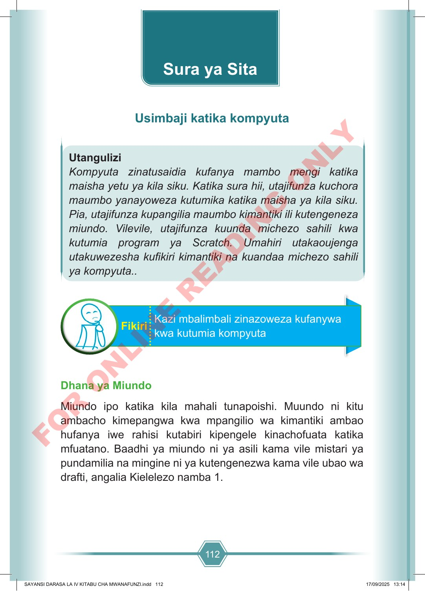

112 Utangulizi Kompyuta zinatusaidia kufanya mambo mengi katika maisha yetu ya kila siku. Katika sura hii, utajifunza kuchora maumbo yanayoweza kutumika katika maisha ya kila siku. Pia, utajifunza kupangilia maumbo kimantiki ili kutengeneza miundo. Vilevile, utajifunza kuunda michezo sahili kwa kutumia program ya Scratch. Umahiri utakaoujenga utakuwezesha kufikiri kimantiki na kuandaa michezo sahili ya kompyuta.. Kazi mbalimbali zinazoweza kufanywa kwa kutumia kompyuta Fikiri Dhana ya Miundo Miundo ipo katika kila mahali tunapoishi. Muundo ni kitu ambacho kimepangwa kwa mpangilio wa kimantiki ambao hufanya iwe rahisi kutabiri kipengele kinachofuata katika mfuatano. Baadhi ya miundo ni ya asili kama vile mistari ya pundamilia na mingine ni ya kutengenezwa kama vile ubao wa drafti, angalia Kielelezo namba 1. Sura ya Sita Usimbaji katika kompyuta SAYANSI DARASA LA IV KITABU CHA MWANAFUNZI.indd 112 SAYANSI DARASA LA IV KITABU CHA MWANAFUNZI.indd 112 17/09/2025 13:14 17/09/2025 13:14 F O R O N L I N E R E A D I N G O N L Y